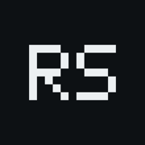
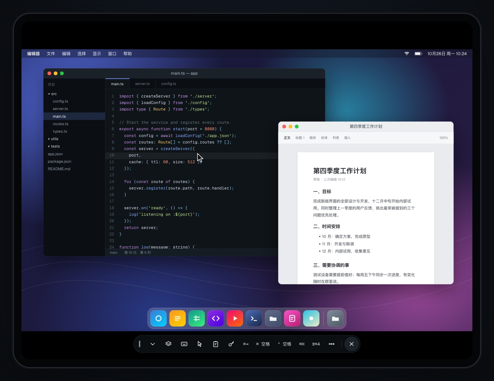

Touch-first control为触控设计
Trackpad and direct-touch modes, two-finger scroll, pinch to zoom, two-finger tap to right-click, on-screen modifier keys.
触控板模式和直接点按模式，双指滚动、捏合缩放、双指轻点右键，还有屏幕上的修饰键。

Open source · MIT OR Apache-2.0开源 · MIT OR Apache-2.0Remote Screen controls your Mac, Windows and Linux computers from iPhone, iPad, Android and the desktop — through the Screen Sharing, Remote Desktop and SSH they already ship. No agent to install, no relay server, no account.
远屏用 iPhone、iPad、Android 和电脑，远控你自己的 Mac、Windows 和 Linux。直接连系统自带的屏幕共享、远程桌面和 SSH：电脑上不用装软件，没有中转服务器，也不用注册账号。
VNCRDPSFTPQUIC
Most remote-desktop apps want an agent on every computer and route your screen through their servers. Remote Screen goes the other way: it speaks the protocols your OS already has, over a network you already trust.
多数远程桌面软件要求每台电脑都装客户端，画面还要经过它们的服务器。远屏反过来：直接用系统已有的协议，走你本来就信任的网络。
The session views are native Swift and Kotlin, so gestures, the cursor and the terminal feel like part of the device rather than a web page.
会话界面是原生的 Swift 和 Kotlin，手势、光标和终端用起来就像设备本身的一部分，而不是一张网页。
Trackpad and direct-touch modes, two-finger scroll, pinch to zoom, two-finger tap to right-click, on-screen modifier keys.
触控板模式和直接点按模式，双指滚动、捏合缩放、双指轻点右键，还有屏幕上的修饰键。
Hardware keyboard, mouse, trackpad and Apple Pencil, plus one-tap shortcuts for the combos iPadOS keeps for itself.
硬件键盘、鼠标、触控板和 Apple Pencil；被 iPadOS 拦下的组合键，工具栏里一点就能发过去。
Portrait or landscape, Split View, Slide Over and Stage Manager — with a different computer in each window.
横竖屏、分屏浏览、侧拉和台前调度，不同窗口连不同的电脑。
Switch between the computer's displays, or let Remote Host create a virtual display sized to your device.
在电脑的多块显示器之间切换；装了 Remote Host 还能按设备尺寸创建虚拟显示器。
Keys, jump hosts, known_hosts, tmux and SFTP. Private keys never leave the device keychain.
密钥、跳板机、known_hosts、tmux 和 SFTP；私钥只存在设备钥匙串里。
Send files both ways and hear the remote computer when you connect through Remote Host.
通过 Remote Host 连接时，可以双向传文件、听电脑的声音。
Face ID or passcode lock, device keys in the Secure Enclave or Android Keystore, and no analytics SDK.
Face ID / 密码锁，设备私钥存在安全隔区或 Android Keystore，没有统计 SDK。
Bonjour on the local network, an address book, and an optional embedded tailnet node.
局域网 Bonjour 发现、地址簿，以及可选的内嵌 tailnet 节点。
Remote Host is a small agent for macOS, Windows and Linux. Install it and Remote Screen switches to RSP/1, a protocol built for remote control, with hardware-encoded video over QUIC.
Remote Host 是一个小巧的被控端，支持 macOS、Windows 和 Linux。装上后，远屏改用专门为远控设计的 RSP/1 协议，经 QUIC 传输硬件编码的画面。
Pre-release未正式发布Works today; build it from source.已经可用，需要从源码构建。
One Rust workspace holds the protocols, sessions, pairing and discovery. The apps are React Native and Tauri on top, with native Swift and Kotlin views wherever latency matters.
协议、会话、配对和发现都在一个 Rust workspace 里；上层是 React Native 和 Tauri 应用，延迟敏感的部分用原生 Swift / Kotlin 视图。
app/ · desktop/ · host-ui/
decode · gestures · cursor · terminal解码 · 手势 · 光标 · 终端
rs-mobile · rs-desktopsessions · pairing · discovery · error codes with a next step会话 · 配对 · 发现 · 带下一步的错误码
RFB 3.8 + Apple authRFB 3.8 + Apple 认证
IronRDP
russh · SFTP
RSP/1 over QUICRSP/1 · QUIC
Video frames, touches, pointer and terminal bytes move between native code and Rust directly. JavaScript only drives the control plane.
视频帧、触摸、指针和终端字节在原生层和 Rust 之间直接传递，JavaScript 只负责控制面。
Errors map to a code and an action the user can actually take, instead of a stack trace or a spinner that never ends.
所有错误都映射成错误码和一条能照着做的提示，而不是一串堆栈，或者一直转圈。
| crates/rsp-core | RSP/1 protocol with no I/O: wire format, control messages (protobuf), video framing + FEC, input, rate controlRSP/1 协议本体，无 I/O：线格式、控制消息（protobuf）、视频分片 + FEC、输入、码率控制 |
| crates/rsp-transport · rsp-client · rsp-files | QUIC/TCP transports with mTLS, client session engine (multipath dial, recovery), file channelQUIC/TCP 传输与 mTLS、客户端会话引擎（多路径拨号、恢复）、文件通道 |
| crates/rs-vnc · rs-rdp · rs-ssh | Native-protocol clients: RFB 3.8 with ARD auth, IronRDP wrapper, russh/SFTP原生协议客户端：RFB 3.8 + ARD 认证、IronRDP 封装、russh/SFTP |
| crates/rs-mobile · rs-desktop | Client cores for the mobile app (uniffi + C ABI) and the desktop controller手机 App（uniffi + C ABI）和电脑端控制端的 Rust 核心 |
| crates/host-core · host-mac · host-win · host-linux · host-fake | Host: platform-neutral core and per-OS capture, encode and input; host-fake is a synthetic platform for CI被控端：平台无关核心和各系统的采集 / 编码 / 注入；host-fake 是 CI 用的合成平台 |
| crates/rs-host-agent | The Remote Host daemon被控端常驻进程 |
| crates/rs-audio · rs-recording · rs-tailnet | Opus audio, encrypted recording, embedded tailnet bindingsOpus 声音、加密录屏、内嵌 tailnet 绑定 |
| proto/rsp/v1 | Protobuf contracts, generated in pure Rust with prost + protox (no protoc needed)protobuf 契约（prost + protox 纯 Rust 生成，不需要 protoc） |
| app/ | React Native app for iOS and Android with native Swift/Kotlin session viewsReact Native App（iOS + Android），会话视图是原生 Swift/Kotlin |
| host-ui/ · desktop/ | Tauri 2 apps: Host menu-bar/tray UI and the desktop controller shellTauri 2 应用：被控端菜单栏/托盘界面、电脑端控制端外壳 |
| tailnet/ | Go module embedding a tsnet node behind a C ABI内嵌 tsnet 节点的 Go module，经 C ABI 导出 |
| drivers/win-iddcx | Windows virtual-display driver (IddCx, UMDF 2)Windows 虚拟显示器驱动（IddCx，UMDF 2） |
| fuzz/ · tools/ | cargo-fuzz targets, CI scripts, latency/netem/bench tooling, release scriptscargo-fuzz 目标、CI 脚本、延迟/弱网/对照基准工具、发版脚本 |
app/iOS / iPadOS 16+, Android 8.0+ (API 26)
iOS / iPadOS 16+、Android 8.0+（API 26）
macOS Screen Sharing (VNC/ARD), Windows Remote Desktop (RDP), SSH
macOS 屏幕共享（VNC/ARD）、Windows 远程桌面（RDP）、SSH
desktop/macOS 13+, Windows 10/11
crates/rs-host-agentmacOS 13+, Windows 10/11, Linux (X11; Wayland through the portal, view only)
macOS 13+、Windows 10/11、Linux（X11；Wayland 经 portal 只看不控）
The app UI is Simplified Chinese only for now — translations are welcome.App 界面目前只有简体中文，欢迎贡献翻译。
No sign-up, no ads, no third-party analytics SDK. Logs stay on the device unless you export them yourself.
不用注册，没有广告和第三方统计 SDK。日志只存在本机，除非你自己导出。
Device identity keys live in the Secure Enclave or Android Keystore; saved passwords stay in the system keychain.
设备身份密钥存在安全隔区或 Android Keystore；保存的密码留在系统钥匙串里。
Remote Host sessions use mutual TLS with pinned device certificates, and pairing is confirmed on the computer itself.
Remote Host 连接使用双向 TLS 和固定的设备证书，配对要在电脑本机上确认。
Remote Screen controls computers. If you find a vulnerability, please report it as described in SECURITY.md.
远屏能控制电脑。发现漏洞请按 SECURITY.md 私下报告。
A synthetic Host and a probe client talk RSP/1 over loopback — no real screen needed. All you need is just and Rust; the pinned toolchain installs itself.
一个模拟的 Host 和一个探测客户端在本机回环上跑 RSP/1，不需要真的屏幕。只要装好 just 和 Rust，固定版本的工具链会自动安装。
git clone https://github.com/gxlself/remote-screen.git && cd remote-screen
cargo install --locked cargo-nextest cargo-deny
just host-fake --bind 127.0.0.1:7400 --dev-allow-unpaired
just probe --addr 127.0.0.1:7400 --dev-allow-unpaired --seconds 5
bash tools/ci/check-linux.shjust hostjust ios · just androidjust host-ui · just desktopjust fuzz <target>Issues and pull requests are welcome — translations especially, since the app only speaks Simplified Chinese today.
欢迎提 Issue 和 Pull Request，尤其是翻译：App 目前只有简体中文界面。